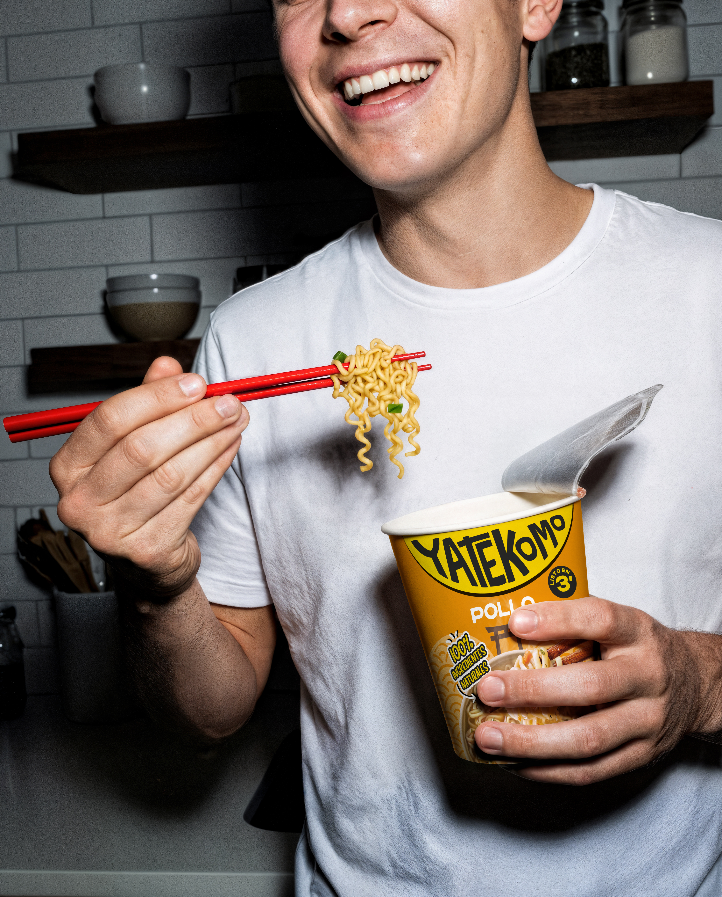
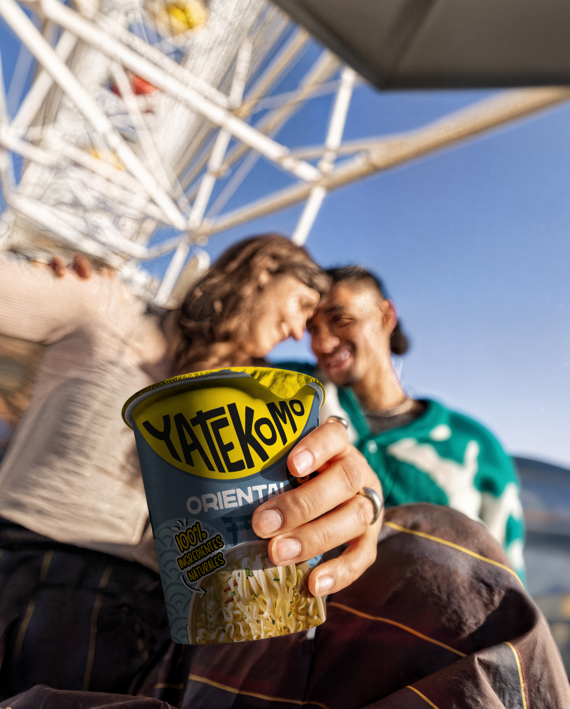
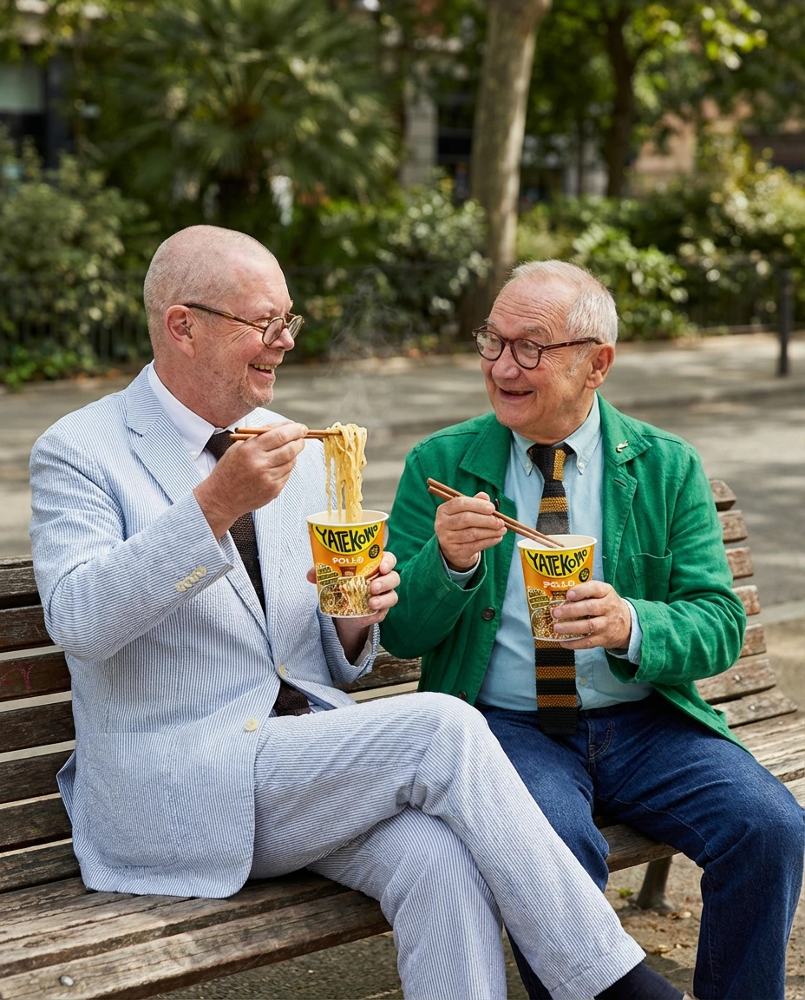

Enter Yatekomo’s new giveaway and win prizes
Official Spanish National Team jerseys and soccer balls signed by Marc Cucurella, and even the chance to meet him in person!
100% natural noodles. Nothing else
No AdditivesWe’re all about the natural flavour of our ingredientsNo PreservativesPackaging and dehydration to improve shelf lifeNo Palm oilOnly virgin and vegetable oilsNo GlutamateNo sweeteners at all, that’s not for us!
Our products
Products and flavors for every taste. Find your match!
We haven’t forgotten you, keen cook
Explore and learn recipes to glow up your meals



Are you wondering how, too? We’ll tell you
These are the questions we're asked most often, so you won't be left wondering
- Answer pending.
- We've redesigned the recipe to make it much more natural without sacrificing the classic flavor. Before, only about 30% of the ingredients were natural; now, 100% of them are.
- Answer pending.
- Answer pending.
Still curious? See all FAQS
Where to buy?